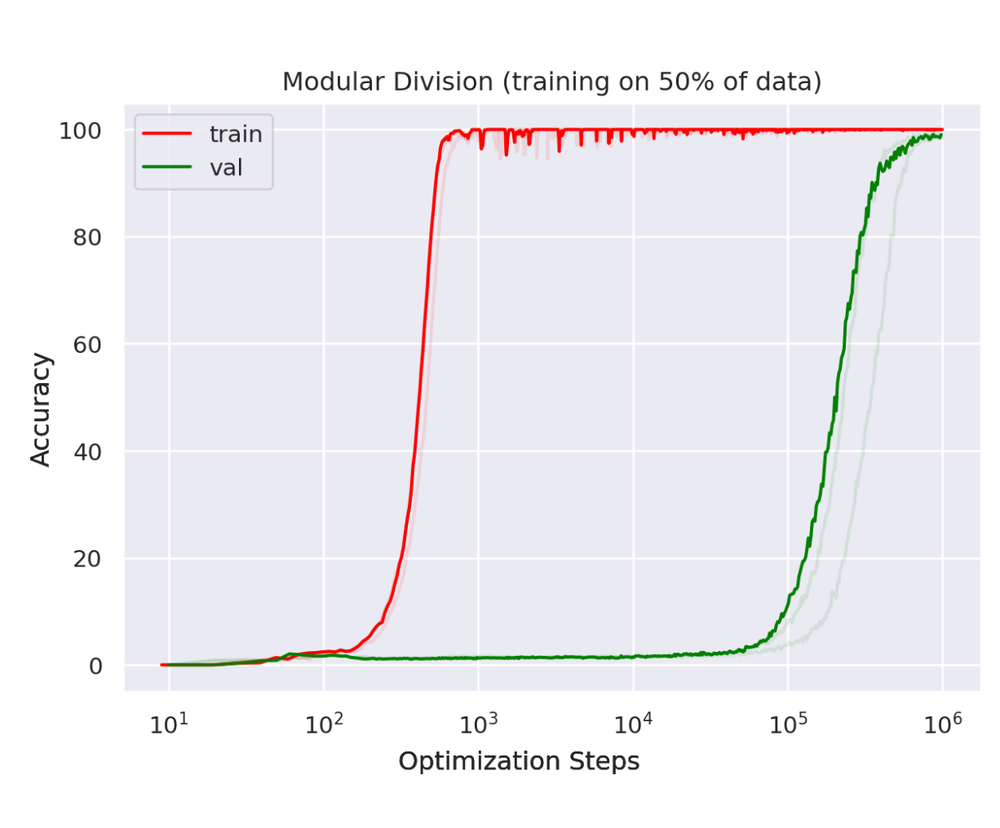
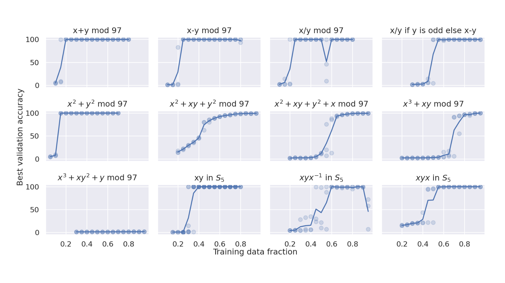
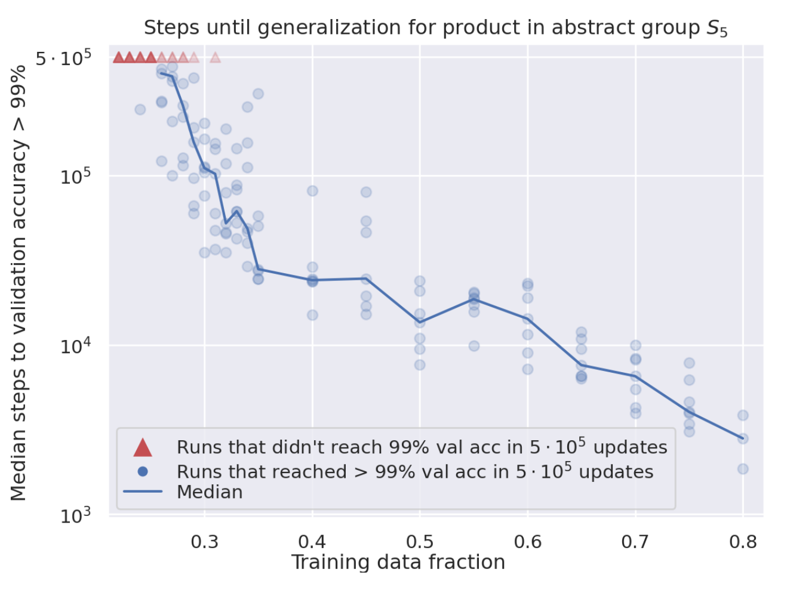
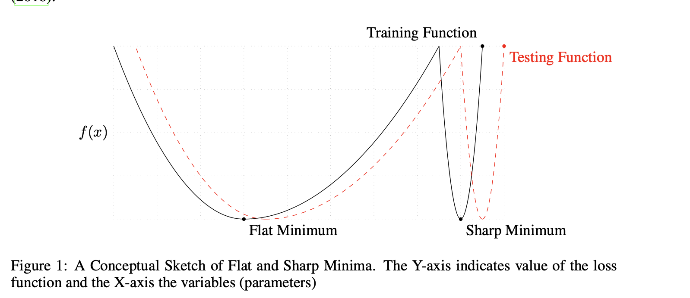

Grokking
Generalization beyond Overfitting
Table of Contents
source: Grokking - Generalization Beyond Overfitting on Small Algorithmic Datasets - 2201.02177v1.pdf [file:][pdf:][ArXiv]
1. Definition of Grokking
1.1. Jargon file
Jargon file (aka The Hacker's Dictionary) says:
When you claim to "grok" some knowledge or technique, you are asserting that you have not merely learned it in a detached instrumental way but that it has become part of you, part of your identity.
1.2. Grokking
We show that, long after severely overfitting, validation accuracy sometimes suddenly begins to increase from chance level toward perfect generalization. We call this phenomenon ‘grokking’ [pg. 2]

Figure 1: Grokking
2. Setup
2.1. Dataset of Binary operation tables
The datasets we consider are binary operation tables of the form a ◦ b = c where a, b, c are discrete symbols with no internal structure, and ◦ is a binary operation. [pg. 2]
(See Appendix A.1.1 for full list)

2.2. Model & Training
3. Why algorithmic dataset?
- As difficulty of problem increases the generalization phenomenon is seen after very long optimization
- Easy to use. Can be trained on single GPU
We argue that these datasets provide a fertile ground for studying a poorly understood aspect of deep learning: generalization of overparametrized neural networks beyond memorization of the finite training dataset. [pg. 1]
4. Observations
4.1. Smaller Dataset => More steps required [pg. 1]
- For larger dataset sizes, the training and validation curves tend to track each other more closely. [pg. 2]

Figure 2: Smaller dataset require higher steps for generalization
4.2. Weight Decay helps
We compare various optimization details to measure their impact on data efficiency. We find that weight decay is particularly effective at improving generalization on the tasks we study. [pg. 2]
We found that weight decay towards the initialization of the network is also effective, but not quite as effective as weight decay towards the origin [pg. 4]
4.3. Adding some noise helps
Adding some noise to the optimization process, e.g.
- gradient noise from using minibatches,
- Gaussian noise applied to weights before or after computing the gradients
is beneficial for generalization, consistent with the idea that such noise might induce the optimization to find flatter minima that generalize better [pg. 4]
4.4. Authors believe grokking to be Architecture Agnostic
In contrast we study the phenomenon of generalization in data-limited regime, with an emphasis on phenomena that we believe to be architecture-agnostic. [pg. 7]
- Later other papers show it to be architecture agnostic and dataset agnostic
Liu et al. [2022] have shown that similar artifacts are observed for various model architectures trained with a variety of datasets, including images, languages, and graphs. [Grokfast - pg. 1]
5. Why does this happen?
5.1. Noise drives model to flatter/simpler solutions
We conjectured that the grokking phenomena we report in this work may be due to the noise from SGD driving the optimization to flatter/simpler solutions that generalize better and hope to investigate in future work whether any of these measures are predictive of grokking. [pg. 9]

Figure 4: Flatness of Loss [Source: On Large-Batch Training For Deep Learning: Generalization Gap And Sharp Minima]